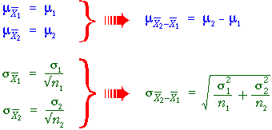
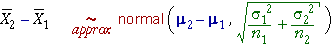

Distribution of difference between sample means
In the previous section, we saw that the difference between two independent quantities X1 and X2 has a distribution with mean and standard deviation
We can apply this to obtain the distribution of the difference between the means of two random samples.

Shape of the distribution
In general therefore,
Irrespective of the distributions within the two
groups,

Simulation: Effect of zinc on colds
The diagram below models an experiment in which volunteers who had developed a cold within the previous 24 hours are randomly given either zinc acetate lozenges or placebo lozenges (identical but with no active ingredient). The duration of the cold was recorded from each volunteer.
(The means and standard deviations are those obtained from an actual experiment that was described earlier.)
Click Accumulate then take several samples. Observe that the empirical distribution of the difference between the means matches the theoretical pink normal distribution.